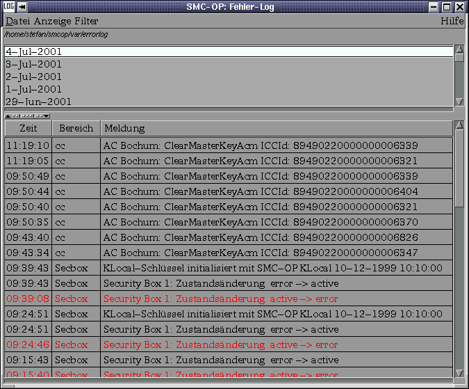
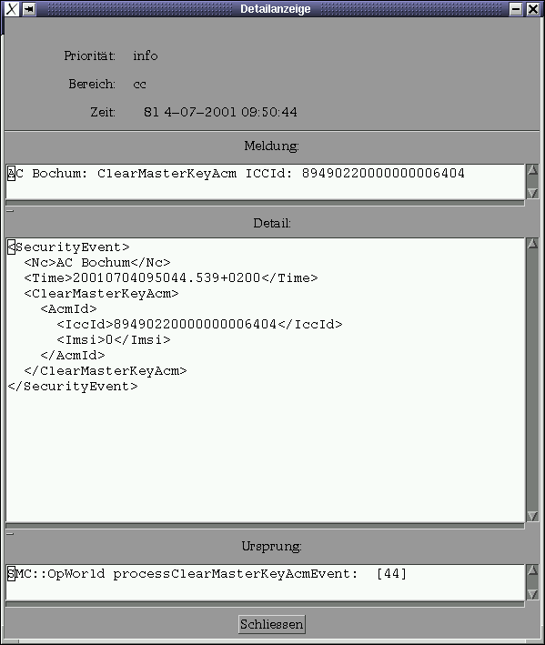

System-Log

System-Log
Systemmeldungen werden im System-Log protokolliert. Die Meldungen werden in verschiedene Kategorien untergliedert:
Darüber hinaus wird jeder Logeintrag einem bestimmten Themenbereich zugeordnet. Auf diese Weise können die Logeinträge einfach gefiltert werden.

Abbildung: Hauptfenster
Das Fenster ist in zwei Teile untergliedert. Im oberen Teil kann der Tag ausgewählt werden, für den die Logeinträge angezeigt werden sollen. Im unteren Teil sind die Logeinträge selbst dargestellt.
Durch einen Doppelklick erhält man die Details zu einem Eintrag. Der Erzeuger des Logeintrags legt die im Detail angezeigten Informationen fest.

Abbildung: Detaileintrag
Über ein Pulldown-Menu können die angezeigten Logeinträge eingestellt werden.

Abbildung: Filtermenu
Mit dem rechten Mausknopf kann für einen Tag ein Contextmenu angezeigt werden, mit dem Logmeldungen gelöscht werden können.

Abbildung: Löschen von Logeinträgen
Über das Menu Anzeige->Zeichenkette suchen, kann nach Logeinträgen gesucht werden, die eine bestimmte Zeichenkette enthalten.